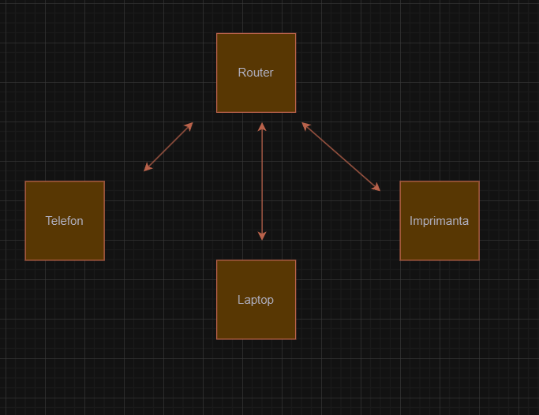
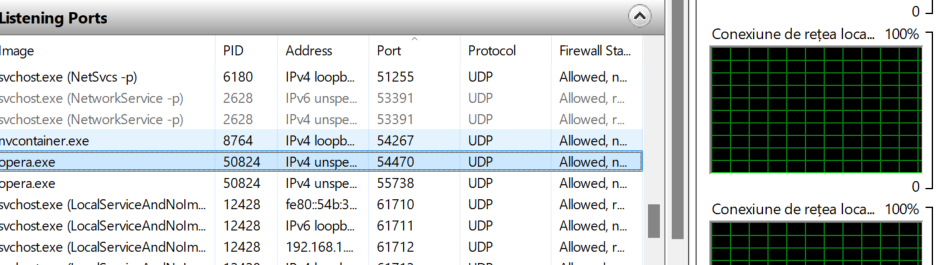
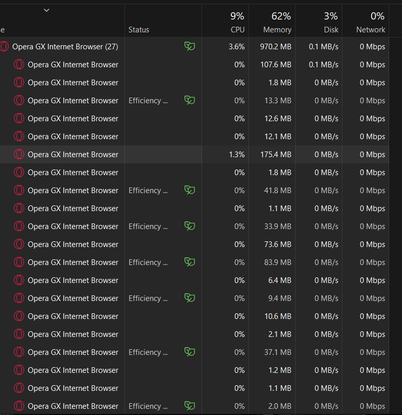
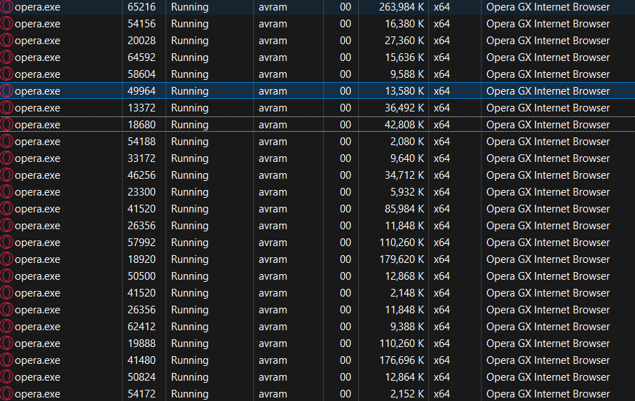

Structura rețelei personale și accesul la internet

- Adresa MAC: 00:1A:2B:3C:4D:5E
- Adresa IP: 192.168.0.101
- Debit la download: 100 Mbps
- Debit la upload: 20 Mbps
Specificații tehnice ale stației de lucru
| Denumire componentă |
Parametri |
Producător |
| Procesor |
Intel Core i7 |
Intel |
| Memorie RAM |
16 GB DDR4 |
Corsair |
| Placă video |
NVIDIA GTX 1660 |
NVIDIA |
Monitorizare resurse


